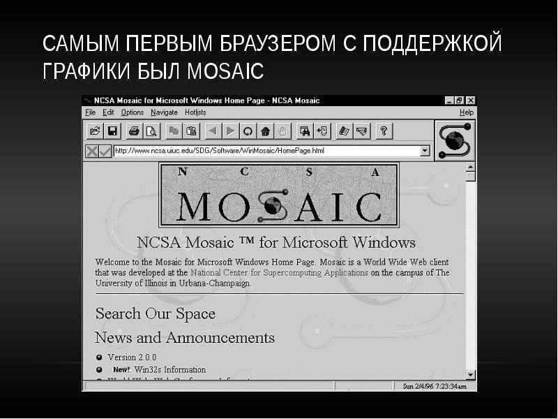
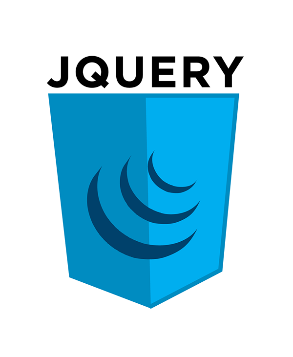

Развитие технологий в веб разработке
конец прошлого века

1993 год
Появляется поддержка отображения изображений на странице вместе с текстом. Создается Mosaic – первый браузер, умевший загружать картинки. Впоследствии переименуется в Netscape, будет основным конкурентом InternetExplorer и удерживать лидерство на рынке браузеров до 2000 года.

1994 год
Microsoft запускает свой первый сайт. В 2014 г разработчики восстановили первую версию этого сайта.Появляется JavaScript, а вместе с ним на сайты приходят анимации, передвижение элементов, модальные окна.

1996 год
В этом году появляются первые спецификации языка CSS, но до полноценного использования и поддержки браузерами пройдет еще 5 лет. Кроме того, в 1996 году свет увидел MacromediaFlash, который впоследствии выкупит компания Adobe и станет известным как AdobeFlash. Flash на долгие годы станет основной технологией для анимации и работы с видео/аудио на сайтах.
1997 год
Широкой публике в сентябре 1997 года представляют поисковую систему Яндекс
1998 год
4 сентября 1998 года студенты Стэнфорда Сергей Брин и Ларри Пэйдж запускают Google В этом же году выходит третья версия языка PHP, которая определила его современный облик.
2001 год
Компания Microsoft выпускает Windows XP со встроенным браузером InternetExplorer 6 и занимает лидирующую позицию на рынке браузеров – 80% пользователей интернета используют InternetExplorer 6.
2003 год
Выходит CMS Wordpress. Изначально предназначенная для блогов, Wordpress станет самой популярной CMS в мире, на которой будут создавать как простые блоги, так и интернет-магазины. По данным w3techs, Wordpress используется на 35% всех сайтов.
2004 год
4 февраля Марк Цукерберг запускает Facebook, который на тот момент еще назывался Thefacebook и был доступен только студентам Гарвардского университета. Публичная версия сайта для всех пользователей интернета станет доступна только спустя два года – в 2006 году. В том же 2006 году запустится ВКонтакте, еще по адресу vkontakte.ru
2005 год
Появляется youtube. В те годы при разработке использовалась технология FlashVideo, которая позволила легко загружать на сайт видео длиной до 10 минут.

2006 год
Публикация первой версии jQuery – JavaScript библиотеки, внесшую ощутимый вклад в развитие веб-разработки. JQuery облегчил работу с JavaScripе, в частности обеспечил одинаковую работу скриптов во всех браузерах.
Safari
На конференции MacworldConference&Expo Стив Джобс презентует широкой публике iPhone c первым полноценным мобильным браузером Safari. Предыдущие мобильные браузеры изменяли внешний вид ресурсов, Safari показывал полноценный сайт так же, как и в настольных браузерах, позволяя пользователям изменять размеры отображения сайтов. С этого момента начинается переход к мобильным версиям сайтов.
2015 год
Набирает популярность тренд на parallax-эффекты: при прокрутке страницы объекты на заднем плане в перспективе движутся медленнее, чем объекты на переднем плане. Потрясающий пример работы с применением parallax-эффектов можно посмотреть на сайте, посвященному сериалу «TheWalkingdead»:

2017 год
Компания Adobe объявляет дату смерти технологии Flash – конец 2020 года. Все сайты переходят на HTML5.